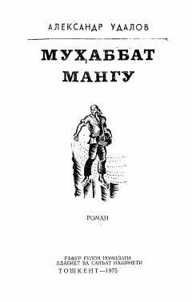

MM1920-yillardagi murakkab voqealar va insoniy tuyg'ular tasvirlangan tarixiy roman.
Ushbu roman yozuvchining «Sabr kosasi» asarining davomi bo'lib, 1920-yillardagi voqealar, xalqlar do'stligi va inson taqdirlarini tasvirlaydi. Asarda Qurbon, Tozagul, Nadejda Malyasova kabi qahramonlarning kurashlari va hayoti hikoya qilinadi.